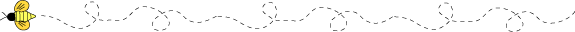
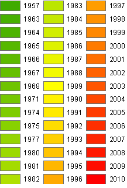

Honey Bees
Local Beekeepers Have you ever wondered where that bee in your garden came from? This first map shows the placement of several hives submitted by local beekeepers. Bees can forage up to 5 miles from their hive, but typically find all they need within a mile radius of their colony. The yellow circles around the hives show the typical one mile foraging radius per hive.
Killer BEES
Africanized bees (killer bees) were created in Brazil in 1957 by scientists attempting to cross-breed with local varieties. The bees have progressively been traveling north ever since as shown in the map.
Registered beekeepers in Utah (2012) This map shows the number of registered beekeepers in Utah per county. Many new beekeepers are not aware that it is required to be registered with the state of Utah. For every registered beekeeper on this map there are many more that are not registered with the state.
Honey Bees